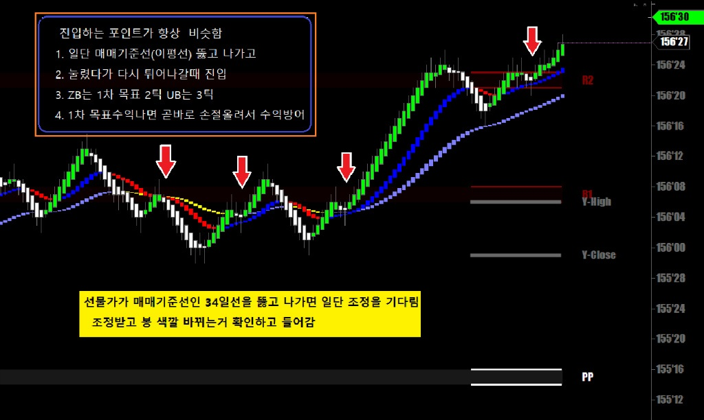
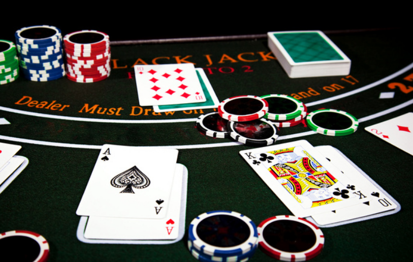
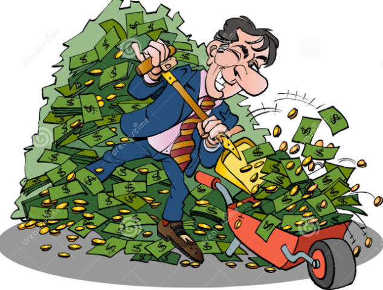
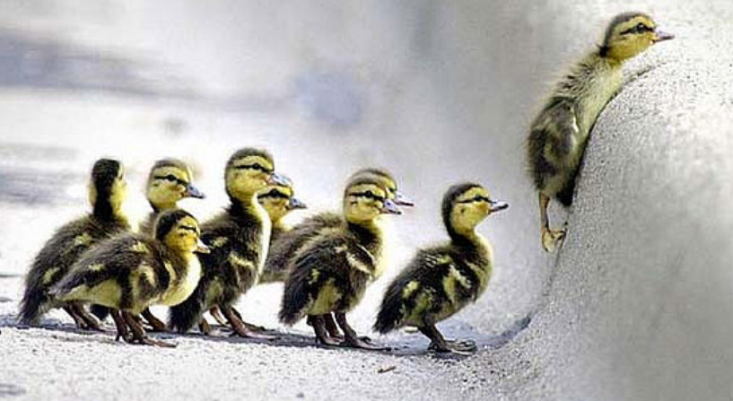
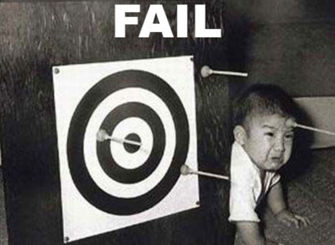
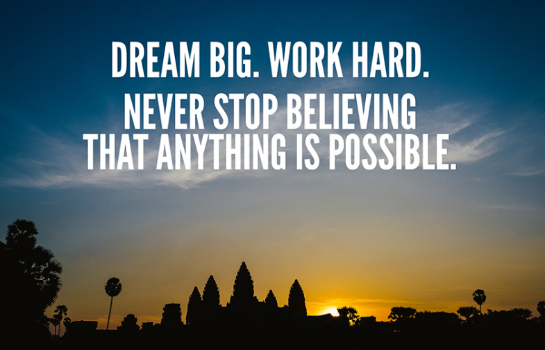

두 사람이 똑같은 선물을 같은 시간에 같은 방향으로 매매했어도
결과가 다르게 나오는 경우가 많다
예를 들어
A라는 트레이더는 일단 진입하고 나면 수익실현 포인트를 2틱 4틱으로 잡는 반면
B라는 트레이더는 1차 수익지점을 5틱 2차는 10틱으로 잡고 있다고 치자
아래 챠트를 자세히 살펴보자
오늘 아침장 챠트

증시의 왕초보도 다 아는 눌림목 공략
그런데 이렇게 똑같이 매매를 해도 누구는 수익이 나고 누구는 손실이 난다
전에 설명한적이 있는데 카지노에서 블랙잭 게임을 할 때
베팅을 항상 5불씩만 하면 딜러보다 내가 더 많이 이겨야 수익이 난다
내가 한판 이기고 딜러가 한판 이기고 이렇게 계속해봐야 수익은 없다
지금 하고자 하는 얘기는 승률이 문제가 아니라 베팅이 문제라는 얘기다

눌림목 공략을 누구나 하지만 어떤식으로 매매하느냐에 따라 결과가 다르다는 얘기다
수익목표를 10틱 정도보는 일반 매매기법으로 눌림목 공략을 하면
* 눌림목 매매의 가장 큰 위험은
주가가 눌림목에서 조정받고 다시 진행하다 전고점(저저점) 부근에서 저항을 받다 밀리면서 돌파에 실패하면 쌍봉패턴이 되어버려 깊이 밀리게 되고 큰 손실로 이어진다는것
위의 챠트에서 볼 수 있듯이 눌림목 받고 다시 진행해서 10틱까지 나간 경우가 많지않다
그에 반해
1차 청산에서 2틱 먹기 기법은 주가가 전고점(전저점)에 가기 전에 청산하기 때문에 확률이 높은것
다른 선물은 1틱당 지급하는 돈이 적어 2틱 먹기기법으로는 수익내기가 불가능하지만
국채선물 ZB는 1틱당 31.25달러를 지급하기 때문에 이 방법이 가능하다
일단 1차 청산해서 수익나고나면 곧바로 손절을 끌어올려 매수지점에 갖다 놓으면
주가가 반대로 밀려도 1차 청산에서 얻은 수익은 항상 보존된다
다행히 주가가 예상대로 계속 진행하면 손절을 조금씩 올려가면서 따라붙어 수익을 키운다

여기서 하고자 하는 얘기는
어느 지점에서 들어가는냐도 중요하지만
일단 포지션을 잡은 후에 어떤식으로 청산 하느냐가 더 중요하다는 얘기.
위에 챠트를 자세히 보면
표시된 진입자리에서 2틱을 먹는게 몇퍼센트나 확률이 있는지 알 수 있다
모든 선물은 각기 특성이 다르고 매매방법도 다르다
그래서 수많은 선물을 펼쳐놓고 어떤 선물이 좀 간다 싶으면 얼른 달라붙는식의 매매는 항상 위험이 따른다
다들 경험이 있겠지만 좀 간다 싶어서 얼른 들어가면 딱 멈춰서버리는 선물..
한가지 선물을 가지고 아주 달인이 될때까지 파다보면 길이 보인다.
국채선물은 타 선물에 비해 느리고 움직이는 폭도 작지만
적게 움직일땐 적게벌고 힘차게 움직이는 날은 많이 벌면 된다.
매매원칙을 세우고 그 원칙에 입각해서 자신감을 가지고 매매하면
반드시 성공할 수 있다.

우리가 예전에 플스나 액박으로 어떤 게임을 처음 할때보면
어떤 지점에서 아무리해도 못넘어가는 자리가 있다
열받고 스트레스받고 이게 말이되냐며 이건 불가능하다며 투덜대다가 나중에 인터넷을 뒤져보면
그 지점을 못넘어간건 나밖에 없었다는..
그래서 충격받고 열심히 하다보니 결국 통과하게되고
나중에는 그 게임을 끝까지 끝낸 경우가 얼마나 많은지..

처음 선물 매매를 시작하면 매매하는 족족 손실이고
내가 사기만하면 반대로 가는통에 누가 우리방에 카메라를 설치하고 감시하다가
내가 사기만하면 반대로 가는건가 정신병이 생길 정도로 스트레스를 받는게 ...정상이다
오죽하면 내가 산 100주의 주식이 전체장을 움직인다는 농담까지 나왔을지..
처음 시작해서 매매가 잘안되고 손실나고 자꾸 실패하는건 지극히 정상이며
앞에 올린 많은 포스팅에 적힌대로
연습매매 수없이 반복하고 그날 그날 매매일지 써가면서 자꾸 수정하고 고치고 바로잡다보면
어느새 고수가 되어있다는...
늘 꿈을 크게 가지고 꿈을 이루기위해 후회없이 최선을 다해야
나중에 늙어서 양로원 침대에 묶여있을 때
내가 젊었을 때 그때 선물 매매 해볼려고 했다가 실패하고 좌절했을 때
포기하지 않고 좀 더 노력했더라면
이렇게 비참하개 내 인생 끝마치지 않을텐데..하며 가슴치는 일이 벌어지지 않을거라는...
Dream Big, Be Big !!!!
